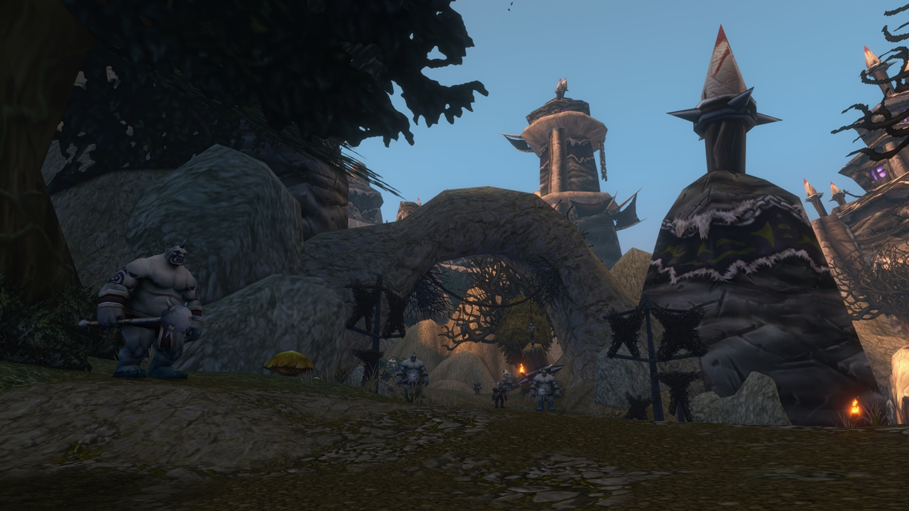

5 款包加格裁缝 · 每款多要 1 卷布
物品恢复 停用官方未给恢复时间
审判 改算远程圣骑士 · 用远程命中
Mark of Flames 1000 → 50河林 · 另有 2 处伤害下调
一、11 月 11 日热修复汇总
- 职业 8 条：德鲁伊 1、猎人 2、圣骑士 2、牧师 2、萨满 1。
- 客服 1 条：物品恢复服务停用，见第三条。
- 敌人与 NPC 3 条：全在河林。
- 物品 2 条 · 专业 1 组 · 任务 3 条 · 世界 1 条：裁缝 5 款包见第二条；世界一条是 Shen'dralas 部分区域无法上坐骑的问题已修。
- 河林：Twilight Enforcer 的 Smash 伤害大幅下调；Executioner Morg 伤害下调；Twilight Forgemaster 的 Mark of Flames 增伤 1000 → 50。
- 其他职业：野性德鲁伊 Rend and Tear 现在对突袭（Pounce）的流血效果生效；猎人 Volley 不再触发特效、移动后不再继续引导；牧师 Confounding Flash（侏儒）和神圣天赋 Twilight Focus 现在可以在暗影形态下正常使用；萨满 Flametongue Totem 2 级失效的问题已修。
- 物品：Bloody Claws of Attack 现在正确加 1 点拳套 / 徒手武器技能；Earthen Silk Slippers 法术伤害高于预期的问题已修。
- 任务：西瘟疫之地 Scarlet Diversions 的指挥帐篷可以正常交互；阿拉希高地 Witherbark Mallet 失效、无法推进 The Giant in the Den 的问题已修；菲拉斯 Freedom for All Creatures 的笼门不重置的问题已修。
二、裁缝：5 款包加格子，也多要布
- Red Mageweave Bag：魔纹布卷 4 → 5，现为 14 格。
- Green Silk Pack：丝绸卷 4 → 5，现为 12 格。
- Black Silk Pack：丝绸卷 5 → 6，现为 12 格。
- Green Woolen Bag：毛布卷 4 → 5，现为 10 格。
- 红色毛纺包（Red Woolen Bag）：毛布卷 4 → 5，现为 10 格。
- 官方原因：这几款包「无意中做小了」，现在调到原本该有的格子。官方只写了新格子数，没写旧格子数，本站不补。
- 已经做好、已经背在身上的包会不会跟着变大，官方没说，待核。外站评论区有玩家说普通款包从此没人做了，这只是玩家看法。
- 站内《裁缝 1–300 冲点路线》主线没用到这 5 款包；页末提到的「商人图样穿插版」里有红色毛纺包，走那一版要多备 1 卷毛布卷 / 个。
三、物品恢复服务暂停
卖装备、删装备前先想清楚
官方原文：发现一个严重 BUG，物品恢复服务已停用，正在调查处理。官方没说什么时候恢复，也没说停用期间卖掉或删掉的物品以后能不能找回。拿不准以后还要不要的东西，先存银行，别卖给商人，也别删。国服官网没有这条公告，国服服务是否同步停用，待核。
四、圣骑士：审判改算远程攻击，Unsealed Fury 不再从风怒图腾攻击产生回响
- 审判（Judgement）：改算远程攻击。触发物品和效果时不再按近战攻击算，命中用圣骑士的远程命中。
- Unsealed Fury（惩戒）：官方说明，随着风怒图腾和神圣打击相关的修正，Unsealed Fury 不再从风怒图腾攻击产生回响。这条神圣打击和风怒图腾的修正没有单独列出，具体改了什么，待核。
- 外站评论区有不少惩戒玩家吐槽 45 级后手感差，也有人要求审判加射程。这些都是玩家反馈，官方没回应。审判改用远程命中后，近战命中装备对审判还有没有用，官方没说，本站不推断。
五、克罗多克要塞（Krol'dok Stronghold）：40–45 级五人本

- 国服官网写的是：克罗多克要塞，等级 40–45，位置在河林。
- 站内副本页：克罗多克要塞：40–45 级五人本攻略（11 月 9 日核对，任务、首领、掉落多项还标着待补）。
- 外站攻略 11 月 12 日更新，补了任务、首领和掉落。这些内容和站内副本页有对不上的部分，本篇以站内页为准，不另列；副本页核对更新后以副本页为准。
- 第一条里河林那 3 处伤害下调，官方没说跟这个本有没有关系，本站不把它们混在一起说。
六、盗贼 45 级任务 The Talisman of Kazdor：祖尔法拉克里任务物品不刷新（玩家报告）
- 玩家报告：单人进祖尔法拉克做这个任务，需要的物品不刷新。毒药、小箱子、大箱子都找过，全本也转了一遍。发帖人已经在游戏内提交了 BUG 报告。
- 回帖里有人说「官方已经知道」，没给出处，算待核。北京时间 11 月 13 日 05:53，还有玩家回帖说只接这一个任务进本也一样，问题仍在。
- 11 月 11 日热修列表里没有这一条，官方未确认。卡在这里的话，可以先放一放，别反复跑本。
国服与国际服
- 国际服：第一到第四条都来自 11 月 11 日国际服官方热修列表。列表没写各条的生效时刻。同一个热修帖里，官方 11 月 13 日凌晨还说明过前一批改动因为部署延迟，比列表晚上线，所以以游戏内为准。
- 国服：国服官网「在线修正」页 2026-11-13 现查，标题仍是《在线修正——11 月 6 日》，未同步 11 月 9 日、10 日、11 日三批。国服实际以游戏内和国服公告为准。